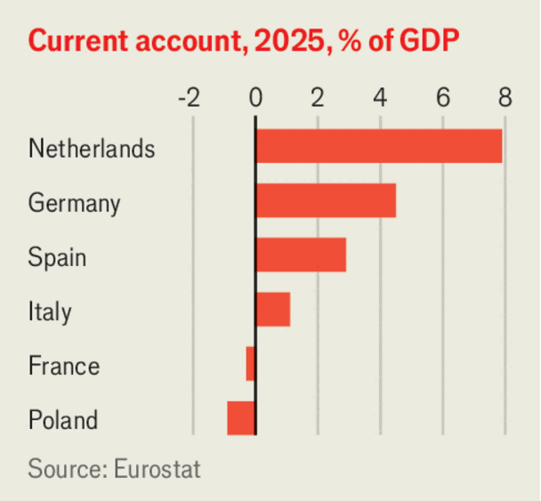

Global imbalances have little to do with Europe’s industrial woes
The EU has forgotten that it, like China, is a surplus economy
June 25th 2026

Everywhere you turn, European leaders are blaming the imbalanced global economy for their woes. Emmanuel Macron is trying to use France’s presidency of the g7 group of rich countries to raise the alarm. Friedrich Merz, Germany’s chancellor, complains about competing with those who invoice in undervalued currencies. “Some countries produce too much and do not consume enough, and vice versa,” moans Ursula von der Leyen, president of the European Commission.
What the leaders really mean is that they have a beef with China, whose formidable manufacturers are outcompeting European producers in many markets. Partly as a result of Chinese competition, Europe is gently deindustrialising: the share of value added in manufacturing is one percentage point lower than it was in 2018. Because the resulting lost jobs are in industries, most notably carmaking, that draw special attention from politicians, fear of the “second China shock” has become politically explosive. But in blaming China for their troubles, Europe’s leaders risk losing sight of their home-grown failings.
The Europeans are right that the world economy is imbalanced and that China is partly to blame. It runs a large current-account surplus, of almost 4% of its vast GDP, although some analysts think it is even higher. Its economy has unusually low consumption, often blamed on the lack of a social safety-net for households. Its exporters, though in brutal competition with each other, do indeed benefit from subsidies and a cheap currency. At a global level, America provides much of the corresponding deficit that soaks up China’s surplus, mostly as a result of its huge government borrowing.

You might think from Europe’s complaining that it, too, is on the deficit side of the ledger, with imports swamping exports. In fact in 2025 the EU ran a current-account surplus of 1.9% of GDP. In Germany, which has the biggest deindustrialisation headache, the figure is more than double that.
Correcting “imbalances”, in other words, would not mean fewer imports in Europe. It might mean the opposite: raising consumption and investment in a way that strengthens the euro and harms exports. Europe’s producers might not even benefit from America and China bringing their current accounts towards balance, supposing that were to happen. Companies would suffer less competition from China but more from America. What they gained in one trading relationship, they would lose in another.
Europe’s error stems from a mercantilist mistake: believing a current-account surplus and manufacturing strength to be the same thing. In fact, the current account reflects the balance between saving and investment, and a surplus can co-exist with industrial malaise. Within the EU there is no correlation between the current account and manufacturing’s share of output (not counting Denmark and Ireland, whose statistics are skewed by pharma and, in Ireland’s case, tax).
The continent’s leaders should instead consider what problem they are trying to solve. Europe may have a bilateral trade deficit with China. But in Germany’s case, only about a third of its loss in market share in other global markets can be explained by Chinese exports, according to the Kiel Institute, a think-tank. The rest reflects a broader loss of competitiveness.
Fixing that problem would mean bringing down energy costs, making labour markets more flexible, integrating markets for capital and services and culling unwise regulations. Some progress is being made at a European level, but national governments are more interested in protectionism, such as the blanket eu tariffs against China floated by advisers to the French government earlier this year. Talk of “global imbalances” helps that agenda, while doing little to raise the remote prospect of either America or China changing tack.
Make no mistake: it would be a good thing if America were to borrow less and Chinese consumers spend more. There is some evidence that imbalances tend to increase the risk of a financial crisis—and they certainly breed protectionism. Market competition must be seen by voters and consumers to be fair, and it is wise to avoid giving China choke points in critical supply chains or total dominance of carmaking.
Yet Europe must recognise that erecting trade barriers with China only increases the need for reforms, because diversifying away from the cheapest supplier raises costs and harms growth. An economy of China’s size and stage of development will always have significant manufacturing exports. If Europeans wants their industries to thrive, they should focus not on shutting out competitors but fixing their own house. ■
Subscribers to The Economist can sign up to our Opinion newsletter, which brings together the best of our leaders, columns, guest essays and reader correspondence.